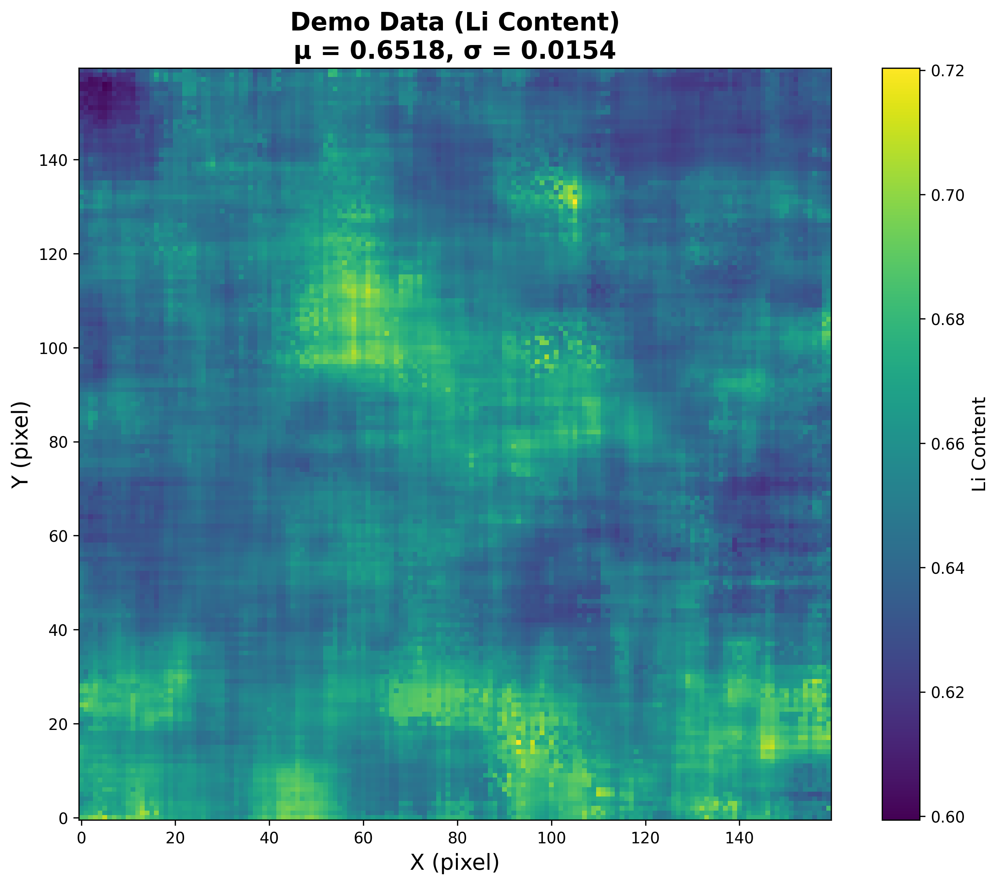
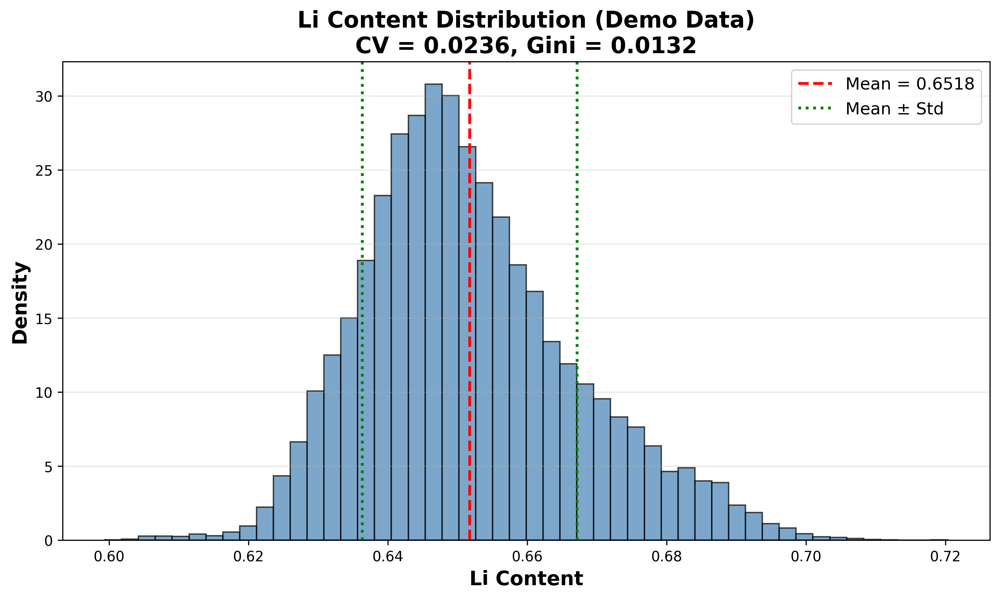
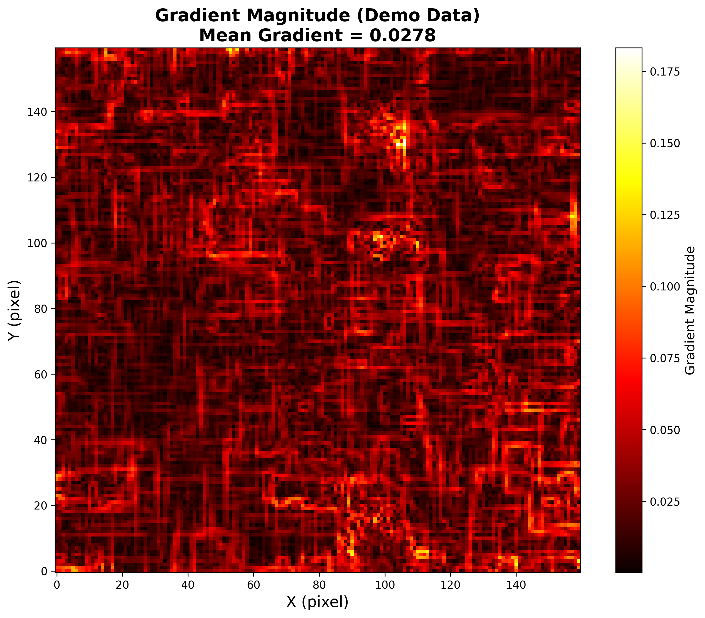

锂含量分布的量化指标详解
前言
本教程详细介绍锂含量分布分析中的关键量化指标，包括Mean（均值）、Std（标准差）、CV（变异系数）、Gini系数、归一化梯度、归一化局部标准差等。
本教程以示例数据为例，展示各指标的含义、计算方法和可视化表示。这些指标可用于评估材料内部锂含量分布的均匀性和空间变化特征。
注意：本教程使用的是示例数据，仅用于演示目的，不代表实际实验数据。
一、指标概述
在原位中子衍射研究中，通过布拉格边成像技术可以获得二维锂含量分布图。为了定量描述锂含量的分布特征，我们需要计算一系列统计指标。
这些指标可以分为两类：
- 基础统计指标：Mean、Std - 描述数据的绝对特征
- 不均匀性指标：CV、Gini、归一化梯度、归一化局部标准差 - 描述分布的不均匀程度（归一化）
二、基础统计指标
2.1 Mean（均值）
定义：所有数据点的算术平均值，表示样品的平均锂含量。
计算公式：
1 | μ = (1/n) Σxᵢ |
其中，xᵢ为第i个像素点的锂含量，n为像素点总数。
物理意义：
- 代表样品整体的锂含量水平
- 反映充放电状态
- 可用于评估充电/放电程度
示例（demo data）：
- demo data均值：μ = 0.6518
- demo data标准差：σ = 0.0154

2.2 Std（标准差）
定义：数据偏离均值的程度，表示锂含量的绝对波动程度。
计算公式：
1 | σ = √[(1/n) Σ(xᵢ - μ)²] |
物理意义：
- 描述锂含量分布的离散程度
- 绝对不均匀性度量
- 值越大，分布越不均匀
示例（demo data）：
- Std = 0.0154
- 说明锂含量在均值附近的标准波动为0.0154
局限性：
- 受均值大小影响
- 不能直接比较不同均值状态的均匀性
- 需要归一化（见CV指标）
可视化：

三、不均匀性指标
3.1 CV（变异系数）
定义：标准差与均值的比值，相对不均匀性度量（去量纲化）。
计算公式：
1 | CV = σ / μ |
物理意义：
- 相对不均匀性（归一化）
- 可比较不同均值状态的均匀性
- 值越小，分布越均匀
示例（demo data）：
- CV = 0.0236
- 说明锂含量的相对波动很小（2.36%）
- 分布非常均匀
应用：
- 适用于比较不同充放电状态的不均匀性
- CV < 0.05：分布非常均匀
- 0.05 < CV < 0.1：分布较均匀
- CV > 0.1：分布较不均匀
3.2 Gini系数
定义：基于洛伦兹曲线的不平等度量，源自经济学，用于描述分布的不均匀程度。
计算方法：
- 将所有数据排序
- 计算累积分布
- 绘制洛伦兹曲线
- Gini = |A| / (A+B)，其中A为洛伦兹曲线与对角线之间的面积，A+B为对角线下方总面积
物理意义：
- 空间分布的不均匀程度
- 考虑了数据的空间顺序
- 值越接近0，分布越均匀
示例（demo data）：
- Gini = 0.0132
- 说明锂含量的空间分布非常均匀
与CV的区别：
- CV：只考虑数值的离散程度
- Gini：考虑数值的空间分布特征
- Gini对极端值更敏感
3.3 归一化梯度
定义：平均梯度幅值与均值的比值，表示局部变化率。
计算公式：
1 | ∇f = (∂f/∂x, ∂f/∂y) |
物理意义：
- 锂含量的空间变化剧烈程度
- 局部不均匀性
- 反映材料内部的锂浓度梯度
示例（demo data）：
- Mean Gradient = 0.0427
- Normalized Gradient = 0.0427 / 0.6518 = 0.0655
- 说明锂含量的局部变化很小
可视化：

应用：
- 评估锂离子传输路径
- 检测相界面的位置
- 分析锂嵌入/脱嵌的动力学过程
3.4 归一化局部标准差
定义：局部标准差的平均值与均值的比值，反映微观不均匀性。
计算公式：
1 | μ_local(x,y) = mean[f in neighborhood of (x,y)] |
物理意义：
- 局部波动程度（归一化）
- 微观尺度的不均匀性
- 比Gini更关注局部特征
示例（demo data）：
- Normalized Local Std = 0.0075
- 说明微观波动非常小
应用：
- 检测局部富集/贫化区域
- 评估材料缺陷的影响
- 分析晶粒边界的不均匀性
四、指标对比与选择
4.1 指标总结
| 指标 | 类型 | 范围 | demo data示例 | 物理意义 |
|---|---|---|---|---|
| Mean | 基础 | 0-∞ | 0.6518 | 平均锂含量 |
| Std | 基础 | 0-∞ | 0.0154 | 绝对波动程度 |
| CV | 不均匀性 | 0-∞ | 0.0236 | 相对波动程度 |
| Gini | 不均匀性 | 0-1 | 0.0132 | 空间分布不均匀性 |
| 归一化梯度 | 不均匀性 | 0-∞ | 0.0427 | 局部变化率 |
| 归一化局部标准差 | 不均匀性 | 0-∞ | 0.0075 | 微观波动程度 |
4.2 指标选择建议
用于描述整体状态：
- Mean：报告充放电状态
- Std：报告绝对波动
用于比较不均匀性：
- CV：最常用的归一化指标
- Gini：考虑空间分布
- 归一化梯度：关注局部变化
- 归一化局部标准差：关注微观波动
用于学术发表：
- 建议同时报告CV和Gini
- 补充归一化梯度提供动力学信息
五、应用场景
5.1 充放电过程对比
通过计算不同充放电状态的量化指标，可以分析：
- 充电过程：Li含量增加，不均匀性如何变化？
- 放电过程：Li含量减少，不均匀性如何变化？
- 速率影响：快速充放电vs慢速充放电，不均匀性差异？
5.2 材料设计优化
量化指标可用于：
- 评估不同合成条件对均匀性的影响
- 优化电极结构和制备工艺
- 指导材料改性研究
5.3 性能关联分析
将量化指标与电池性能关联：
- CV与循环寿命的关系
- 归一化梯度与倍率性能的关系
- 不均匀性与安全性的关系
六、计算代码示例
1 | import numpy as np |
七、总结
本教程详细介绍了锂含量分布分析中的6个关键量化指标：
- Mean：描述整体锂含量水平
- Std：描述绝对波动程度
- CV：描述相对不均匀性（最常用）
- Gini：描述空间分布不均匀性
- 归一化梯度：描述局部变化率
- 归一化局部标准差：描述微观波动
这些指标从不同角度量化了锂含量的分布特征，为材料性能评估和优化提供了重要依据。
在实际应用中，建议：
- 根据研究目的选择合适的指标
- 综合使用多个指标进行全面分析
- 结合可视化结果进行解释
- 与电池性能数据进行关联分析
参考资料
- NCM523材料中子衍射数据
- 布拉格边成像技术
- 统计学基础理论
锂含量分布的量化指标详解 finished！